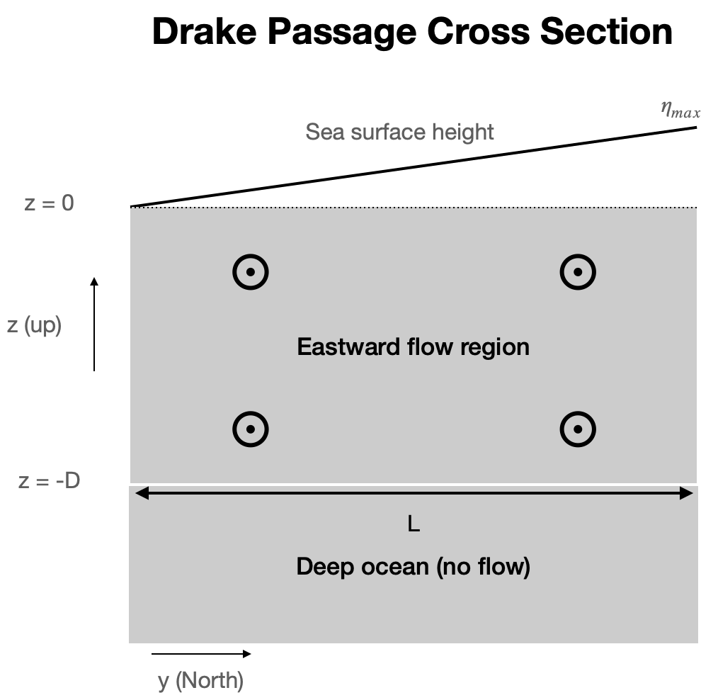
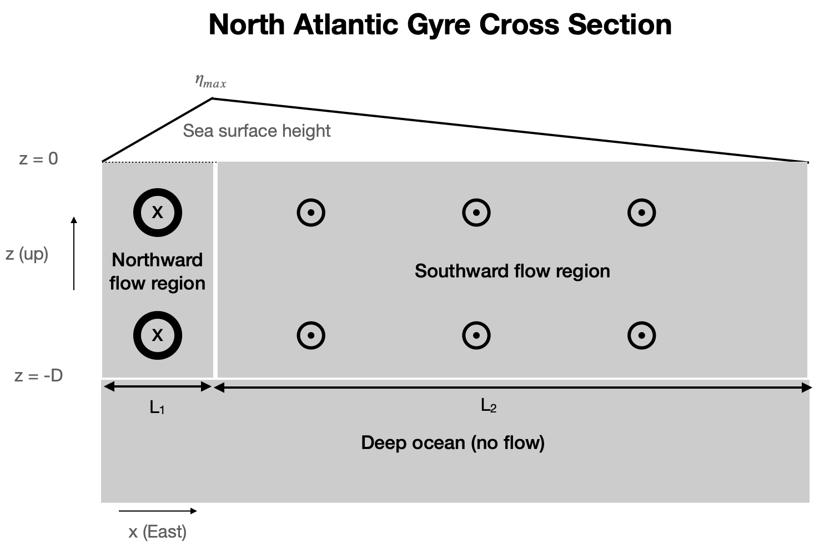
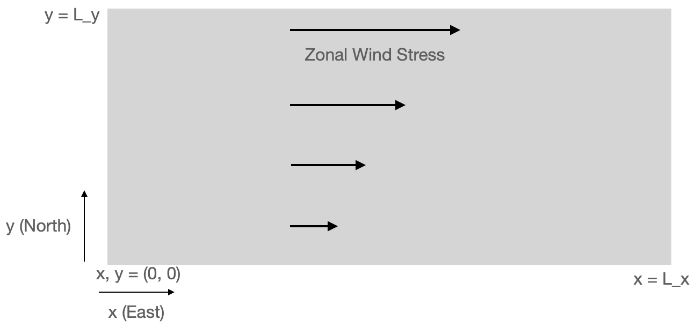

Homework 3: Thermal Wind and Ekman Transports¶
In this problem set you will apply the concepts of geostrophic balance, thermal wind balance, and Ekman transport to simple calculations.
1) Surface Geostrophy and Thermal Wind in Drake Passage¶
Consider the cartoon shown here which represents a simplified meridional cross section across the Drake Passage in the Southern Ocean. A major simplification is that \(\eta\) and \(b\) are assumed to vary linearly in the y direction, and that the geostrophic velocity \(u_g\) varies linearly in depth.

1a) What is the strength of the sea surface height gradient \(\partial \eta / \partial y\) in terms of the given parameters.¶
1b) Using surface geostrophic balance, estimate the speed of the zonal surface current.¶
Use the following parameters: \(L = 850 km\), \(\eta_{max} = 1\) m.
1c) Calculate the effective depth \(D\) over which the zonal current falls to zero¶
…assuming a total transport of 180 Sv. Also assume the following:
The surface current speed is 0.1 m/s (should roughly match answer from part b)
The current decays linearly with depth until from the surface to \(z=-D\)
The current is uniform in the y direction
Note that this part of the problem does not involve geostrophy or anything relating to equations of motion. It’s just a volume transport calculation.
1d) Use thermal wind to estimate the North-South temperature difference across the drake passage based on the geostrophic shear¶
Assume:
The equation of state is linear and only contains temperature, with \(b = g \alpha \Theta\), with \(\alpha = 1.6 \times 10^{-4}\) K\(^{-1}\).
The geostrophic shear is uniform over depth \(D\) and zero below.
\(D = 4000\) m (should roughly match the answer from part c).
Compare you estimate the the potential temperature field from the WOCE Southern Ocean Atlas Drake Passage section. Is your number reasonable?
2) Surface Geostrophy and Thermal Wind in the North Atlantic¶
The cartoon below shows a zonal cross section across the North Atlantic passing through the Gulf Stream and the subtropical gyre. Going from West to East, the sea-surface height \(\eta\) quickly increases to \(\eta_{max}\) and then decays more slowly back to zero on the Eastern boundary. Assume all these changes are linear; this is a highly simplified representation that makes it easier to make calculations. This SSH pattern is qualitatively similar to the real SSH pattern off the Eastern US.

2a) What is the strength of the sea surface height gradient \(\partial \eta / \partial x\) in terms of the given parameters in the Northward Flow Region and the Southward Flow Region.¶
2b) Using surface geostrophic balance, estimate the speed of the meridional surface current in each of the two regions.¶
Use the following parameters: \(L_1 = 500 km\), \(L_2 = 3000 km\), \(\eta_{max} = 0.5\) m.
2c) Calculate the effective depth \(D\) over which the meridional current \(v_g\) falls to zero¶
Assume the total northward transport in the Northward Flow region (Gulf Stream) is 50 Sv. Assume equal and opposite transport in the Southward Flow region.
Also assume:
The meridional surface current speed in the gulf stream region is 0.1 m/s (should roughly match part b).
The current decays linearly with depth until from the surface to \(z=-D\)
The current is uniform in the x direction
Note that this part of the problem does not involve geostrophy or anything relating to equations of motion. It’s just a volume transport calculation. It does not matter whether you do the calculation for the Northward Flow region or the Southward Flow region. You should get the same answer.
2d) Use thermal wind to calculate the implied temperature at the following locations¶
\(z=-1000\) m, \(x = L_1\)
\(z=-1000\) m, \(x = L_1 + L_2\) (the Eastern boundary)
Assume the temperature on the Western boundary at 1000 m depth is 5\(^\circ\) C. Assume the depth scale \(D = 2000\) m (should match the answer from part c.)
Use all the other same assumptions as part 1d.
3) Ekman Transport and Pumping¶
Consider a region of the subtropical ocean shown in the cartoon, described using cartesian coordinates.

The region is of size (\(L_x\), \(L_y\)). The zonal wind stress increases linearly from \(\tau_x = 0\) at \(y = 0\) to \(\tau_x = \tau_0\) at \(y = L_y\). There is no meridional stress. This is qualitatively similar to the mid-latitude South Atlantic or South Pacific.
You may assume that \(f\) = \(f_0\) = const.
3a) Calculate the Ekman transport velocity as a function of \(y\)¶
I’m looking for a formula in terms of the provided parameters.
3b) Now plug in numbers and calculate the net Ekman transport across the Southern (\(y=0\)) and Northern (\(y=L_y\)) borders of the region.¶
\(L_x = 2000\) km
\(L_y = 1000\) km
\(\tau_0 = 0.1\) N m\(^{-2}\)
\(f = 0.8 \times 10^{-4}\) s\(^{-1}\)
\(\rho_0 = 1025\) kg m\(^{-3}\)
By net Ekman transport I mean \(V_Ek\) integrated over the \(x\) dimension. Give you answer in Sv.
3c) Calculate the Ekman pumping velocity over the region¶
I’m looking for a formula in terms of the provided parameters
3d) Now plug in numbers and calculate the new Ekman upwelling / downwelling over the entire region.¶
Use the same numbers as above.
Give you answer in Sv.